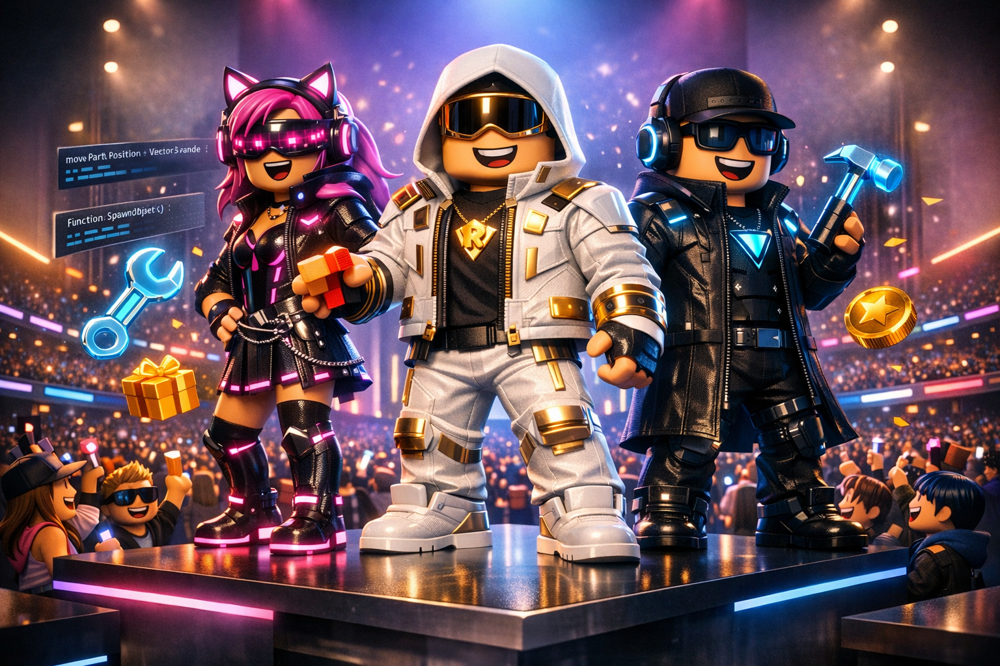

Cómo crear un avatar de aspecto premium en Roblox sin gastar nada: guía de diseño paso a paso

Hay jugadores de Roblox que gastan cientos de Robux en su avatar y aun así lucen genéricos. Y hay jugadores que no han gastado un solo Robux y tienen avatares que detienen la atención en cada servidor. La diferencia no está en el presupuesto — está en entender los principios de diseño que hacen que un avatar destaque. Esta guía te los enseña todos.
El error que cometen la mayoría de jugadores
La trampa más común al personalizar un avatar en Roblox es añadir todos los artículos más llamativos que tienes sin considerar si funcionan bien juntos. El resultado suele ser un avatar visualmente ruidoso que, paradójicamente, llama menos la atención que uno sencillo pero bien coordinado.
Los mejores avatares de Roblox tienen casi siempre algo en común: una dirección visual clara. Siguen una paleta de dos o tres colores, tienen una proporción corporal trabajada y cada accesorio cumple un propósito estético específico.
Paso 1: Define el cuerpo antes que la ropa
Roblox permite modificar las proporciones del cuerpo desde la sección de apariencia de tu perfil. Hay cuatro presets: Classic (el cuerpo cuadrado tradicional), Normal, Slender y Custom. Para un aspecto "premium" moderno, el tipo Slender es el más popular en 2026 porque la ropa tiende a verse más elegante en esta proporción.
El color de piel interactúa con toda la ropa encima. Colores de piel más saturados o inusuales (tonos azulados, morados, dorados) pueden funcionar como elemento diferenciador, pero requieren más cuidado al coordinar la ropa.
Paso 2: La paleta de colores, la clave que nadie te cuenta
El principio más poderoso del diseño de avatares es la limitación deliberada de colores. Los avatares que parecen caros casi siempre usan una paleta de máximo tres colores, con uno dominante, uno secundario y uno de acento.
Piensa en tu avatar como un outfit de moda: necesita un color base neutro (negro, blanco, gris), un color principal que dé identidad (azul marino, verde oscuro, burdeos), y un color de acento pequeño que cree contraste (dorado, naranja, blanco).
Paso 3: Las reglas de los accesorios
Roblox permite equipar hasta cinco accesorios simultáneamente. Usarlos todos no siempre es la mejor opción.
Regla del accesorio focal: Elige un accesorio principal que sea el "punto estrella" del avatar. Los demás accesorios deben complementarlo sin competir con él en intensidad visual.
Regla del espacio negativo: No llenes cada espacio disponible. Un avatar sin accesorio en los hombros puede lucir más limpio que uno con dos accesorios de hombro complicados. El espacio vacío también es diseño.
Regla de la escala: Mezcla accesorios de diferentes tamaños. Un sombrero grande combina mejor con accesorios de cara pequeños y discretos. Un accesorio de hombro voluminoso pide ropa de cuerpo sencilla.
Paso 4: Animaciones — el elemento más infrautilizado
La mayoría de jugadores nunca cambia las animaciones de su avatar, y eso es un error de diseño enorme. Una animación diferente transforma por completo la personalidad visual del personaje en movimiento. Un avatar que camina de forma diferente al estándar se percibe inmediatamente como más trabajado.
En el catálogo de Roblox, filtra por "Animaciones" y precio cero. Hay paquetes completos gratuitos que incluyen caminar, correr, saltar e idle. Un idle diferente es especialmente efectivo cuando estás quieto conversando con otros jugadores.
Paso 5: Saca partido de los artículos UGC gratuitos de alta calidad
El programa UGC (User Generated Content) ha producido en 2026 artículos gratuitos de calidad visual equiparable o superior a muchos artículos de pago. Para encontrar los mejores: filtra el catálogo por precio cero y ordena por "Más populares". Los artículos con más de 10,000 usos son señal de que la comunidad los considera de calidad.
Inspección final: el paso que sella el resultado
Antes de dar por terminado tu avatar, usa el visor en pantalla completa del editor de Roblox y obsérvalo desde todos los ángulos. Hazte estas preguntas:
- ¿Hay más de tres colores dominantes? Si es sí, elimina el elemento que más distorsiona la paleta.
- ¿Hay un accesorio que compite por atención con otro? Si es así, quita el menos importante.
- ¿El conjunto tiene sentido como un "look" completo, o parece una colección aleatoria de piezas?
- ¿Funcionaría en un juego de roleplay serio y también en uno de batalla? Los mejores avatares son versátiles.